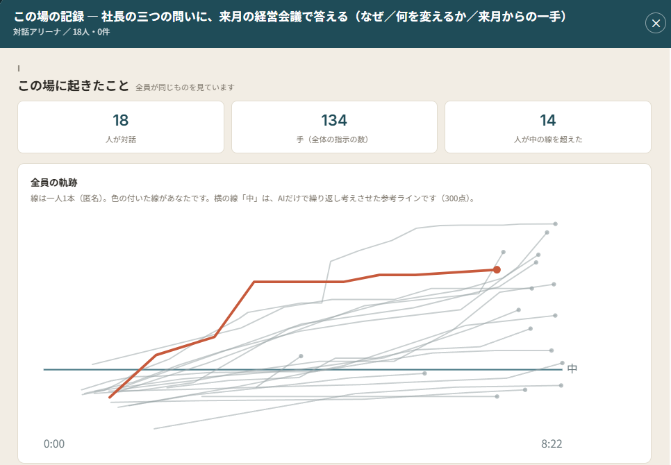

メンバー
毎月の
毎月の実践の回：自社の問いを、AIで形にする
戦略の問いから始め、AIで動くものを作り、自社の戦略に戻す。第6回は、全員が同じ問いでAIと対話し、深まりを1往復ごとに点数化して比べました。第7回は、各自がAIでウェブサイトを作って公開し、開発のコストが消えた後の戦略を議論します。
AIを便利な道具として使うだけで終わらせない。月に一度、自社の問いを持ち寄り、AIで実際に作り、事業戦略に戻す実践の場です。

主催 栗山 実 マッキンゼー出身。多摩大学経営大学院 特任教授、グロービス経営大学院 教員。企業のAI戦略を助言。
有償メンバー80名超・「参加して良かった」97%
初月無料・以降は月額6,930円（税込）。次回は11/17(火) 20:00〜。最初の回は無料で参加でき、合わなければ費用はかかりません。
| 1990年代 | 2020年代 | |
|---|---|---|
| 登場したもの | PC・インターネット | 生成AI |
| 多くの人は | ExcelやWordの活用講座へ | ツールとしてのAI活用、社内の生産性改善へ |
| 世界を変えたのは | インターネット前提の新サービス（Amazon、Google、Netflix…） | ？？？ |
ツールとしての活用は、放っておいても広がります。差がつくのは、AI前提で事業を構想し、実際に動かせるかどうかです。
ツールの使い方ではなく、AI前提・AI駆動の事業構想に焦点を当てます。
知る・考えるだけでなく、実際に動くものを作り、戦略と実装を結びつけます。
AIで「どうやるか」が容易になるほど、「何を問うか」が差になります。解くべき課題から始めます。
決まったカリキュラムで終わらず、毎月の新しいテーマで、AI戦略の引き出しを積み重ねます。
戦略の問いから始め、AIで動くものを作り、自社の戦略に戻す。第6回は、全員が同じ問いでAIと対話し、深まりを1往復ごとに点数化して比べました。第7回は、各自がAIでウェブサイトを作って公開し、開発のコストが消えた後の戦略を議論します。
各回を場面ごとに見返せるビューア、「必見だけ20分」の見方、第1回からの記録を言葉で探して聞ける機能、社内の会議でそのまま使えるツール。業界×業務で並べた課題の棚（2,000件超）も。
毎朝7時ごろ、これまでの回の文脈で世界のAIニュースを読み解き、AIイベントや挑戦の種とあわせて、メンバーのコミュニティに届けます。コミュニティでは、届いた読み解きをもとに、メンバー同士で考えを交わせます。
AIニュースの文脈解説、ニュースから考えるWHYの種、AIイベント、用語集・ガイド。毎朝更新しています。
大企業でAI推進を担う人、経営企画・事業開発、コンサルタント、経営者など80名超。
栗山 実
株式会社アンテカニス 代表取締役／多摩大学経営大学院 特任教授／グロービス経営大学院 教員
AIの使い方や効率化の話は、たくさんあります。でも、それで十分でしょうか。インターネットの普及期に世界を変えたのは、Excel教室に通った人ではなく、GoogleやAmazonを生み出した人たちでした。戦略を考える視点と、実際に手を動かす実践。その両方を、毎月、参加者と一緒に試しています。
データサイエンティスト・起業家・戦略アドバイザー。マッキンゼー・アンド・カンパニー等を経て独立。大企業のデータ活用やAI戦略の助言から、データ技術を基盤としたスタートアップの立ち上げと経営まで手がける。東京大学理学部卒・同大学院修了（素粒子論）。

全員が同じ強さのAIを相手に、同じ問いで対話し、その深まりを1往復ごとに点数化して比べました。分かれ目は入力の長さではなく、問いの立て方でした。
次回
第7回AI駆動開発と企業戦略
システムを作るコストと時間が急激に圧縮された今、戦略と価値創造の主戦場はどこへ移るか。
A日程とB日程は同じ内容です。都合のよい日程にご参加ください。
第8回テーマは決まりしだいお知らせします
A日程とB日程は同じ内容です。都合のよい日程にご参加ください。
次の開催日は、決まりしだいお知らせします。
オンライン（Zoom）。AとBは同じ内容。途中の回から参加できます。
97%が「参加して良かった」
※ 97%は、第1〜5回の参加者アンケート（延べ117件）で「参加・視聴して良かった」に「とてもそう思う」「ややそう思う」と回答した割合。
AIは議事録や資料づくりの便利ツールだと思っていました。事業の戦略や意思決定に組み込むという発想そのものが新鮮でした。
普段はAIに相談する程度でしたが、AIに仕組みを作らせて手元で動かす体験ができました。
身近な題材で考え方を体験でき、社内での広げ方のヒントになりました。
第1〜5回の参加者アンケートの自由記述をもとに、趣旨を変えずに要約・再構成しています。
月額6,930円（税込）
6,300円＋税・早期参加枠
初月無料お申し込み後、最初の回は無料で参加できます。初回のお支払いはその回のあとの15日。合わなければ、初回のお支払い日の前日までの解約で費用はかかりません。
メンバーとして参加する開催ごとの報告と次回の案内を、月2回ほどメールでお届けします。参加するかどうかは、読んでから決められます。
お支払いと解約の詳しいしくみ（お申し込みの時期ごとの初回のお支払い日）→ お申し込み後の解約・お支払いの確認（Stripe カスタマーポータル）→
第7回AI駆動開発と企業戦略
システムを作るコストと時間が急激に圧縮された今、戦略と価値創造の主戦場はどこへ移るか。
A日程とB日程は同じ内容です。都合のよい日程にご参加ください。
第8回テーマは決まりしだいお知らせします
A日程とB日程は同じ内容です。都合のよい日程にご参加ください。
次の開催日は、決まりしだいお知らせします。